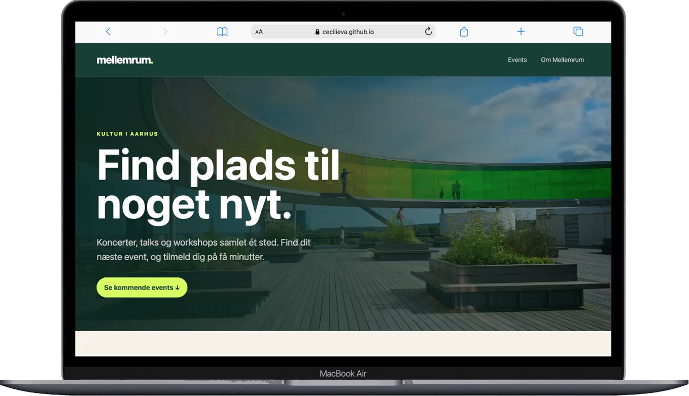
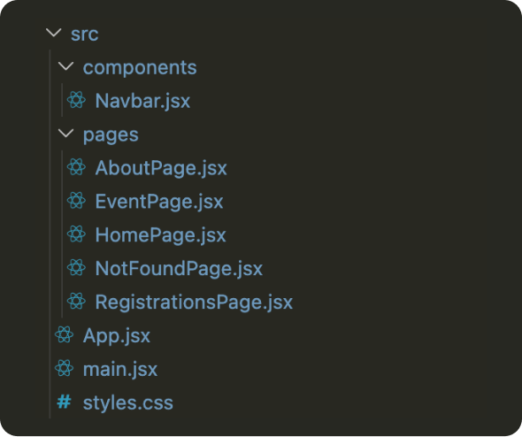
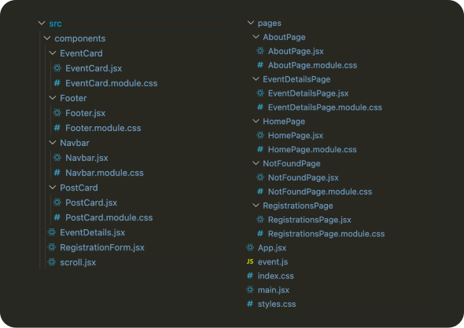
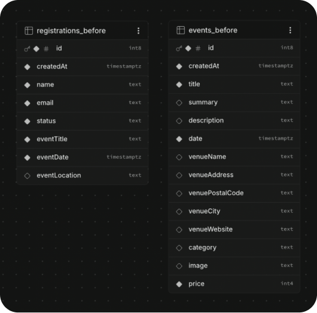
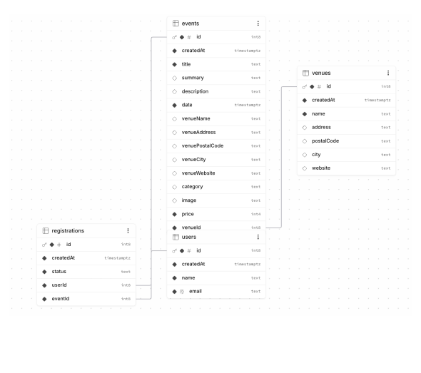
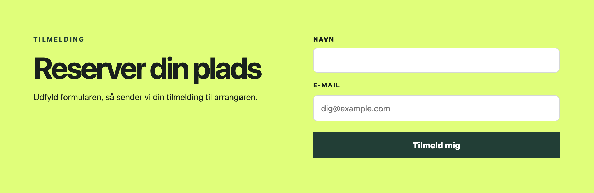
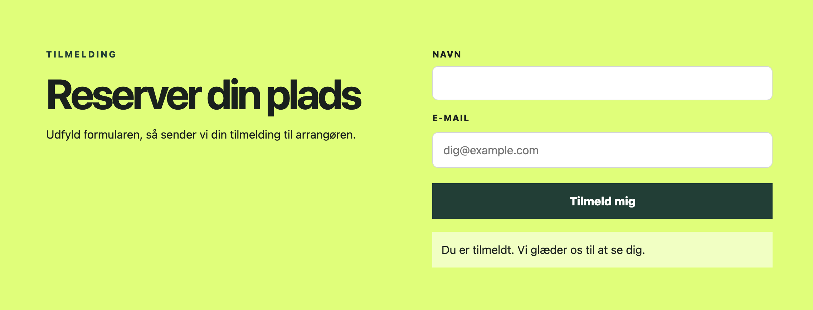

Mellemrum.
Plads til noget nyt.
Mellemrum er en kulturplatform for Aarhus, hvor brugere finder og tilmelder sig koncerter, talks og workshops. Platformen virkede, men koden og datamodellen kunne ikke vokse med den.
Jeg videreudviklede løsningen med en ny komponentstruktur, en normaliseret database i Supabase og en række forbedringer af performance og tilgængelighed.

Mellemrum · ForsideFra 29 fund til en plan.
Casen startede med en teknisk audit af den eksisterende løsning. Hvert fund fik et område, en konsekvens, et løsningsforslag og en prioritet fra 1 til 5. Langt de fleste handlede om struktur, men de højest prioriterede var dem, brugeren mærker direkte: manglende feedback, forkert sidetitel og favicon og manglende tilgængelighed.
- Struktur og navngivning 10
- UI-konsistens og tilgængelighed 9
- Robusthed og UI-states 3
- Performance 2
- Datamodel 1
- Uden område 4
- 01Tilmelding giver ingen beskedBrugeren ved ikke, om tilmeldingen lykkedes.
- 02Sidetitlen er fra skabelonenFanen og søgemaskiner viser forkert kontekst.
- 03Forkert faviconFanen viser Vites ikon i stedet for Mellemrums.
- 04Aria-labels og alt-tekster manglerSiden er svær at bruge med skærmlæser.
- 05lang="en" på en dansk sideSkærmlæsere udtaler danske ord som engelske.
- 06Ubrugte mapper og README fra skabelonenRod og misvisende for den næste udvikler.
En kodebase, der kan vokse.
Udgangspunktet var få store sidefiler, ét langt stylesheet og en tilmeldingstabel, der kopierede eventets titel, dato og sted i stedet for at pege på eventet. Jeg delte siderne op i komponenter med egne CSS Modules og normaliserede databasen, så tilmeldinger, brugere og venues har hver deres tabel. Nu skal en ændring kun laves ét sted.
Før

Efter

Før

Efter

Et flow, brugeren kan stole på.
Tilmeldingen gemmes nu i databasen, og brugeren får en tydelig bekræftelse. Formularen er flyttet ud i sin egen komponent, så EventPage kun henter eventet og vælger den rigtige tilstand. Arrangøren kan se alle tilmeldinger samlet pr. event og søge i dem.


Hurtigere, og lettere at bruge.
Forsiden henter nu kun de felter, eventkortene bruger, og billederne leveres i den størrelse, kortene viser. Siden har synligt tastaturfokus, en sidetitel pr. side og er testet i Lighthouse og ned til 320 px. Næste skridt er at fjerne de gentagne venue-felter fra events og flytte billederne væk fra Unsplash.
Brugeren først, oprydningen bagefter.
Jeg prioriterede de fund, brugeren mærker direkte, før den interne oprydning. Fravalget var, at nogle strukturfund blev udskudt. Jeg lærte, hvor meget en normaliseret datamodel og små komponenter letter senere ændringer.
Værdi for brugere, arrangører og udviklere.
Brugerne får en hurtigere side og vished om, at tilmeldingen er gået igennem. Arrangøren får overblik over tilmeldinger, og en kodebase, hvor ændringer kun laves ét sted, gør videreudvikling billigere.
- Cecilie Vestergaard Andersen